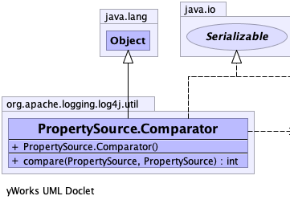
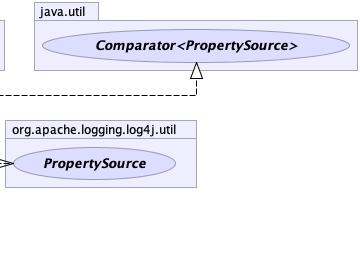

public static class PropertySource.Comparator extends java.lang.Object implements java.util.Comparator<PropertySource>, java.io.Serializable
|  |  |
| Constructor and Description |
|---|
Comparator() |
| Modifier and Type | Method and Description |
|---|---|
int |
compare(PropertySource o1,
PropertySource o2) |
public int compare(PropertySource o1, PropertySource o2)
compare in interface java.util.Comparator<PropertySource>